You use the standard Calibre CAA options
to review CAA NDD score metric results. The CAA NDD results are
DFM scores instead of the yield results generated in a standard
CAA run.
DFM Report
Card — Analyze and view flat and hierarchical data using Calibre
RVE for DFM. In this user interface, data is partitioned by cell
or by window, and can be displayed by colormap, histogram, plot,
or highlighted in a connected layout viewer such as Calibre DESIGNrev
or other supported layout viewer.
Yield Reports
— Export the data in Calibre RVE for DFM to a report format file
for analysis. Note that Lambda or Yield metrics information is suppressed
in the CAA NDD flow.
Prerequisites
You have
access to a layout viewer that is integrated with Calibre Interactive,
CAA from the Calibre Interactive DFM GUI, and Calibre RVE for DFM.
You have successfully
completed the steps in “Running a CAA NDD Analysis”.
Procedure
- Select
the Totals tab in the Calibre RVE for DFM
window and examine the CAA NDD total scores for each Group in the
Avg_Quality results column as shown in Figure 1.
Figure 1. CAA NDD Totals — Score Metric Results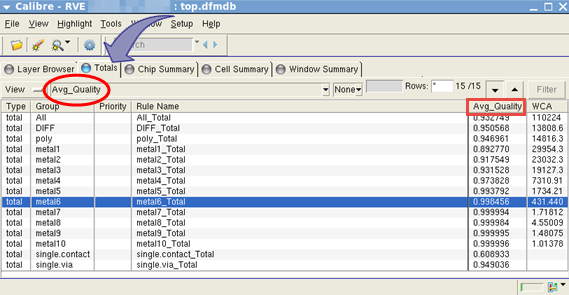
For comparison, examine the Totals tab
yield metrics and results from a standard CAA run for each Group
in the Calibre RVE for DFM window as shown in Figure 2.
Figure 2. Standard
CAA Totals — Yield Metric Results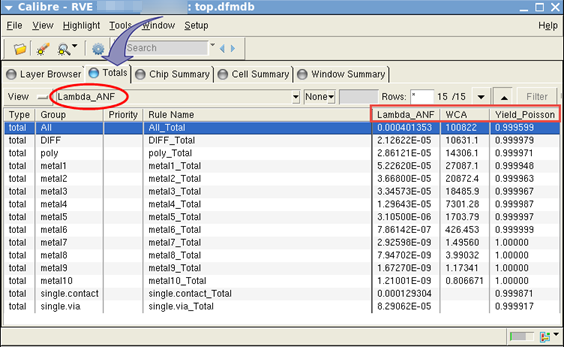
- Select the Chip Summary tab
in the Calibre RVE for DFM window and examine the CAA NDD scores
for each Group in the Avg_Quality, via results, and WCA columns
as shown in Figure 3.
Figure 3. CAA NDD Chip Summary — Score Metric Results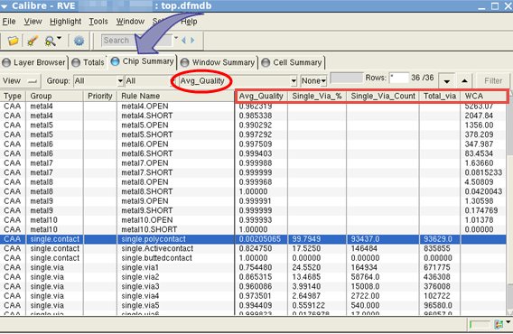
For comparison, examine the Chip Summary tab
yield metrics and results from a standard CAA run as shown in Figure 4.
Figure 4. Standard
CAA Chip Summary — Yield Metric Results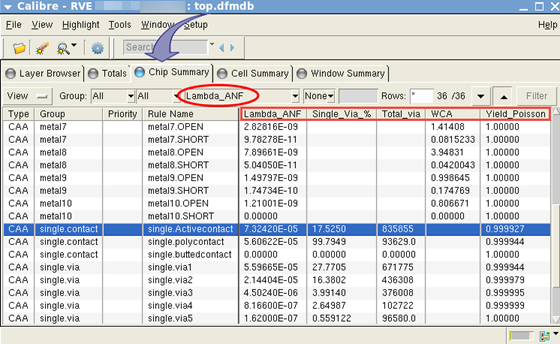
- Select
the Window Summary tab in the Calibre RVE
for DFM window to examine the CAA NDD scores by Window Id in the
Avg_Quality results column.
- Right‑click
on a Window Id and select Drill Down as shown
in Figure 5.
Figure 5. CAA NDD Window Summary — Score Metric Results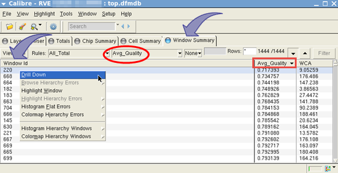
In the Drill Down tab, examine the CAA
NDD scores and via results by Group and Rule Name for the selected
Window Id as shown in Figure 6.
Figure 6. CAA NDD Window Summary Drill Down — Score Metric Results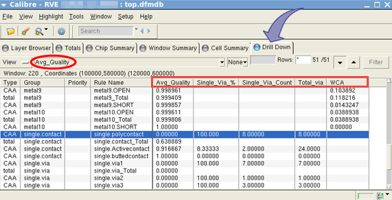
- Select
the Cell Summary tab in the Calibre RVE for
DFM window to examine cell information and CAA NDD scores by Cell
Name in the Avg_Quality results column as shown in Figure 7.
Figure 7. CAA NDD Cell Summary — Score Metric Results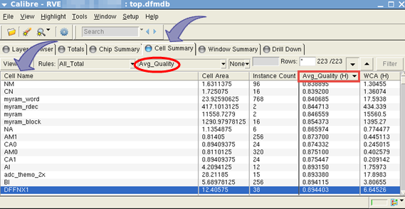
- To view
a CAA NDD colormap of Avg_Quality hierarchical window data for a
rule, perform the following steps:
- In
the Calibre RVE for DFM window select the Chip Summary tab
and left‑click a Rule Name to select it.
- Right‑click
the selected Rule Name and choose .
Figure 8. Colormap Hierarchy Windows Avg_Quality 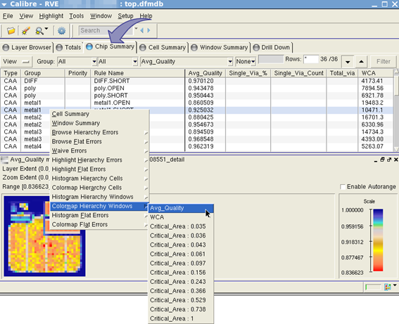
- Click Enable
Autorange on the generated colormap Scale. Hover your
cursor over the colormap and note that the red areas of the colormap
have a lower Avg_Quality score than the blue areas. The highest
Avg_Quality score is 1.000000.
- Right‑click
on a region (tile) of interest in the colormap window and select Highlight
Window.
Figure 9. Colormap Highlight Window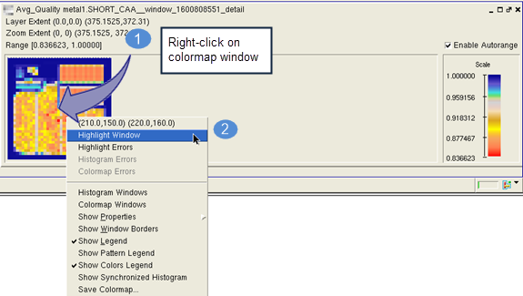
- View
the highlighted region in a connected layout viewer.
Figure 10. Colormap Highlight Window in Layout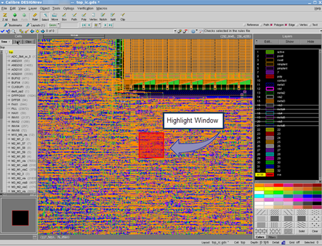
- To view
a histogram of Avg_Quality hierarchical window data for a rule,
perform the following steps:
- In
the Calibre RVE for DFM window Chip Summary tab,
left‑click a Rule Name to select it.
- Right‑click
the selected Rule Name and choose .
Figure 11. Histogram Hierarchy Windows Avg_Quality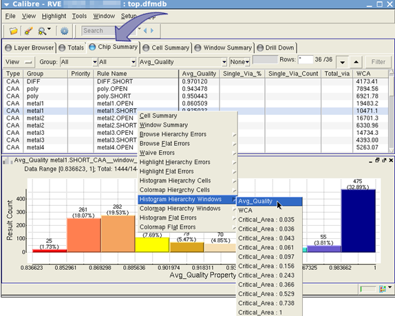
- Hover
your cursor over the generated histogram to view the data range
and count statistics. Note that a red color bar in the histogram
has lower Avg_Quality Property scores than a blue color bar. The
highest Avg_Quality Property score is 1.000000.
- Right‑click
on a histogram bar of interest and select Highlight This
Bar.
Figure 12. Highlight Histogram Bar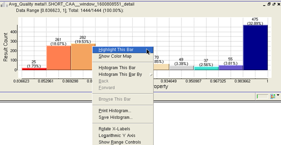
- View
the highlighted region in a connected layout viewer.
Figure 13. Histogram
Highlight Bar in Layout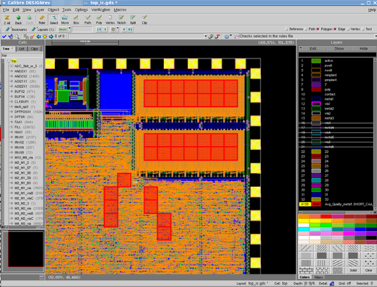
- To export
Avg_Quality data to a report format file, perform the following
steps:
- In
the Calibre RVE for DFM window Chip Summary tab,
click the View menu and select Export
To File… as shown in Figure 14.
Figure 14. CAA NDD Export — Score Metric Results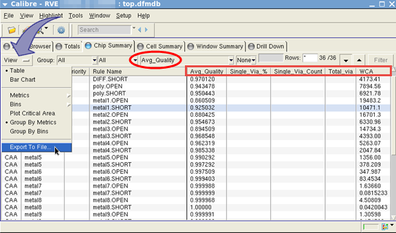
- Enter
a filename for your report and click OK.
The report is written to your current directory. By default, the
report columns are sorted in ascending order. You can change the
sorting order of a column by clicking the column header in the Calibre RVE
for DFM window Chip Summary tab and re‑running
the report.
- View
the report file Avg_Quality scores and via scores and counts. Note
that the report shows only results for Avg_Quality metrics and suppresses
information for Lambda or Yield metrics.